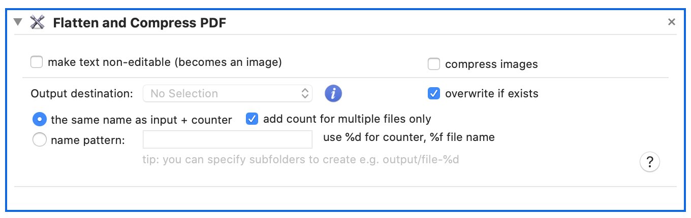

Re-render selected PDF and crate new one. This processes ‘flattens’ all PDF layers which simplifies its structure and can be used to ‘fix' PDF so that it cannot be opened in non-main stream viewers.

Another use of this process is to lock PDF forms. This will remove all of form’s interactivity, user will not be able to overwrite a field and change a value. Alternative to this is make text non-editable, turning content of the PDF into image. This will effectively prevent text to be copy & pasted or extracted. However, this will increase PDF’s size and in some cases, make text look blurry.
Large PDFs that contain a log of graphics and different fonts (e.g. PDFs generated by PowerPoint) can be made smaller by turning all text into images (making the text non-editable) and then compressing images within resulting PDF file.